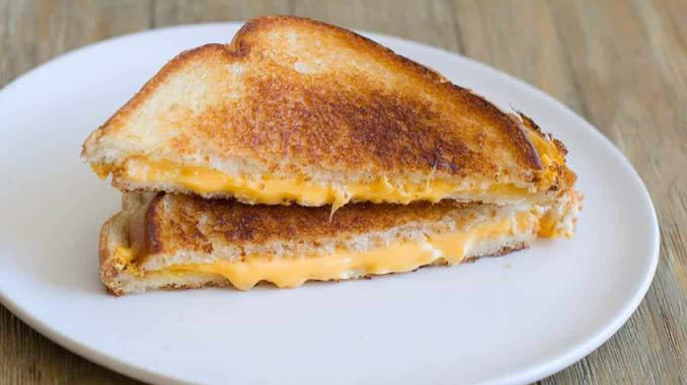

Grilled cheese recipe

Description
Learn how to make a grilled cheese sandwich in a nonstick pan with buttered bread and
American Cheddar for a classic hot sandwich.
Ingredients
- 4 slices of white bread
- 3 tablespoons of butter, divided
- 2 slices of Cheddar cheese
Steps
- Preheat a nonstick skillet over medium heat. Generously butter one side of a slice of bread.
Place bread butter-side down in the hot skillet; add 1 slice of cheese.
Butter a second slice of bread on one side and place butter-side up on top of cheese.
- Cook until lightly browned on one side; flip over and continue cooking until cheese is melted.
Repeat with remaining 2 slices of bread, butter, and slice of cheese.
Back to main page